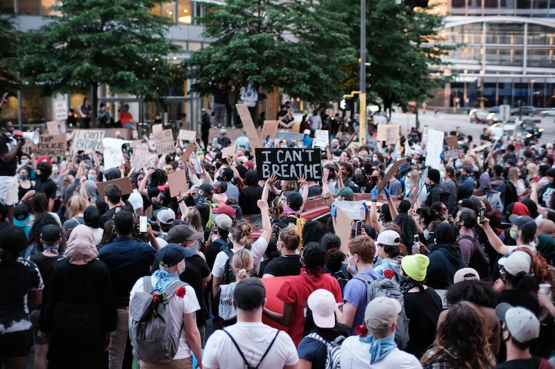

from openai import OpenAI
import base64
def encode_image(image_path: str) -> str:
"""Encode an image to a base64 string."""
with open(image_path, "rb") as image_file:
return base64.b64encode(image_file.read()).decode("utf-8")
image_path = "Minneapolis_05-28-20.jpeg"
base64_image = encode_image(image_path)
client = OpenAI()
response = client.chat.completions.create(
model="gpt-4o",
messages=[
{
"role": "user",
"content": [
{"type": "text", "text": 'Describe this photo.'},
{
"type": "image_url",
"image_url": {
"url": f"data:image/jpeg;base64,{base64_image}",
},
},
],
},
],
)I wanted to test the new OpenAI model (GPT-4o) to see how well it could extract information about a photo. In the past, I used the older GPT-4 Vision model for text extraction, but it costs twice as much. To start, I selected a sample image from the Wikipedia page on the 2020 BLM protests.

To pass the image, it is first encoded in base64, a process that converts the image into a string. I was initially unfamiliar with this process, but it effectively represents the image as text. I then send the string to the OpenAI API with the instruction, ‘Describe this photo.’
Nine seconds later, this was the response:
from IPython.display import Markdown
Markdown(response.choices[0].message.content)The photo depicts a large crowd of people participating in a protest or rally. Many are holding signs with messages, including one prominently displayed near the center that reads “I CAN’T BREATHE.” The setting appears to be an urban environment, likely near downtown or a central city area, given the presence of multi-story buildings, trees, street signs, and vehicles in the background. Most of the participants are wearing casual clothing and several people are visibly wearing face masks. The atmosphere seems charged and unified, with participants actively raising their signs and making their voices heard. The protest appears to be peaceful.
The cost, based on current API prices for GPT-4o of $5.00 per 1M tokens for input and $15.00 per 1M tokens for output, is about half a penny, which is pretty reasonable, even to scale up.
response.usage.prompt_tokens*(5.00/1000000) + response.usage.completion_tokens*(15/1000000)0.005665Version 2.0 is a little more advanced. I ask a series of specific questions about the photo, and I use Pydantic to structure the response, passed to OpenAI as a function. This ensures that I get a JSON response with consistent feature names and and data types. I put it all in analyze_protest_image().
import base64
import json
from typing import List
from pydantic import BaseModel, Field
from openai import OpenAI
import pandas as pd
class ProtestAnalysis(BaseModel):
police_presence: bool = Field(
..., description="Boolean indicating the presence of police in the image."
)
sign_texts: List[str] = Field(
..., description="Texts written on signs in the image."
)
number_of_protesters: int = Field(
..., description="Estimated number of protesters in the image."
)
description: str = Field(
..., description="General description of the scene in the image."
)
emotions: List[str] = Field(
..., description="List of visible emotions on people's faces in the image."
)
actions: List[str] = Field(
...,
description="List of actions people are performing in the image, such as standing, marching, etc.",
)
class Config:
title = "Protest Analysis Model"
description = "A model representing an analysis of a protest image, including police presence, texts on signs, number of people, description, visible emotions, and actions."
protest_instructions = """
Your role is to analyze an image from a protest and answer the following questions:
1. Is there a police presence visible in the image? If so, describe it.
2. What texts are written on any visible signs? List all texts.
3. Estimate the number of protesters present in the image.
4. Provide a general description of the scene in the image.
5. List any visible emotions on people's faces in the image.
6. List the actions people are performing in the image, such as standing, marching, etc.
Provide detailed and accurate responses based on the visual information in the image.
"""
def encode_image(image_path: str) -> str:
"""Encode an image to a base64 string."""
with open(image_path, "rb") as image_file:
return base64.b64encode(image_file.read()).decode("utf-8")
def analyze_protest_image(image_path: str):
"""Analyze a protest image to identify police presence, texts on signs, number of people, description, visible emotions, and actions."""
base64_image = encode_image(image_path)
client = OpenAI()
response = client.chat.completions.create(
model="gpt-4o",
tool_choice= "required",
tools=[
{
"type": "function",
"function": {
"name": "protest_analysis",
"description": "Analyze protest image.",
"parameters": ProtestAnalysis.model_json_schema(),
} }
],
messages=[
{"role": "system", "content": protest_instructions},
{
"role": "user",
"content": [
{"type": "text", "text": protest_instructions},
{
"type": "image_url",
"image_url": {
"url": f"data:image/jpeg;base64,{base64_image}",
},
},
],
},
],
max_tokens=3300,
)
return json.loads(response.choices[0].message.tool_calls[0].function.arguments)
# Example usage
image_path = "Minneapolis_05-28-20.jpeg"
result = analyze_protest_image(image_path)
result{'police_presence': False,
'sign_texts': ["I CAN'T BREATHE", 'STOP POLICE BRUTALITY'],
'number_of_protesters': 100,
'description': 'The image depicts a large group of protesters gathered in an urban area, possibly near a building or office complex. People are densely packed and holding up various signs. There is no visible police presence. The atmosphere appears active and engaged.',
'emotions': ['determined', 'angry'],
'actions': ['standing', 'marching', 'holding signs']}The results appear plausible. By requiring number_of_protesters to be an integer, ChatGPT is compelled to select a specific value. Typically, it is hesitant to provide such precise figures.
Let’s use the function again on a different image from Wikpedia.
analyze_protest_image('Demonstration_against_Ahmadinejad_in_Rio.jpg'){'police_presence': False,
'sign_texts': ['NÃO Ahmadinejad', 'not welcome', 'Ahmadinejad'],
'number_of_people': 50,
'description': 'Group of people protesting, several holding signs and banners, with some banners and shirts opposing Ahmadinejad. The protest appears to be taking place outdoors with a hilly landscape in the background.',
'emotions': ['determination', 'anger'],
'actions': ['standing', 'talking', 'holding signs']}Not sure I see “anger”.
One more time, this time of a protester being arrested.
analyze_protest_image('George_Floyd_Protest,_Columbus_(May_30th).jpg'){'police_presence': True,
'sign_texts': [],
'number_of_protesters': 1,
'description': "The image depicts a protest scene with a police presence. A protester is being detained by a police officer wearing riot gear and a gas mask. The police officer appears to be directing the protester towards a police vehicle. The protester is wearing casual clothes and a mask with a floral design. Two police vehicles are visible in the background. The setting appears to be an urban area in front of a building with the address '10 West Broad'.",
'emotions': ['determination', 'anxiety'],
'actions': ['being detained']}Really loves “determination.”
Lots of directions for future 3.0 version, such as:
- Limiting actions to predefined categories.
- Providing more detailed descriptions of police roles.
- Considering the removal of emotional elements, as they were the most ambiguous.”